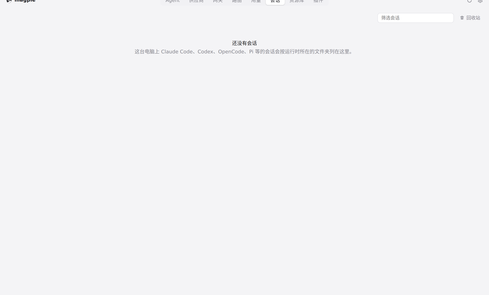
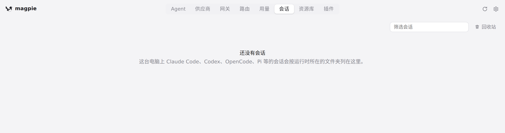

#461 界面预览
commit 5d2f115 · 回到 PR · 「会话」页顶部的 Agent 标签栏改造：标签实际放不下时收成一个紧凑的 Agent 选择按钮，点开用现有菜单列出全部 Agent 及会话数（键盘可选、Escape 还焦点、选中后退出回收站）；420px 以下的窄窗口把搜索框和回收站挪到下一行。顺带把选中的标签换成与分段控件一致的底色/描边（并加 aria-pressed），菜单锚点同步 aria-expanded。
红线是鼠标走过的轨迹，红色圆环是一次点击；底部文字是这一步在做什么。空格暂停，← → 逐段查看。

「会话」页的 Agent 标签栏 · 「会话」页：本 PR 改的就是顶部这一行

「会话」页的 Agent 标签栏 · 顶部一行：Agent 标签、搜索框与回收站